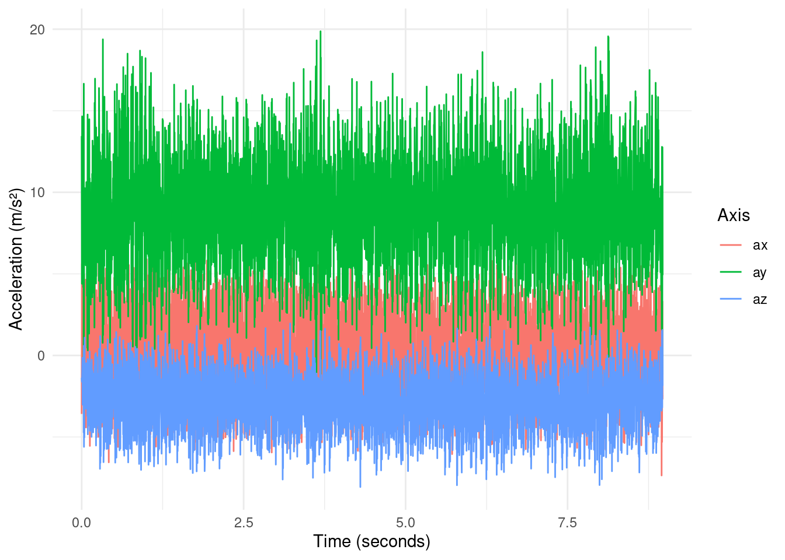
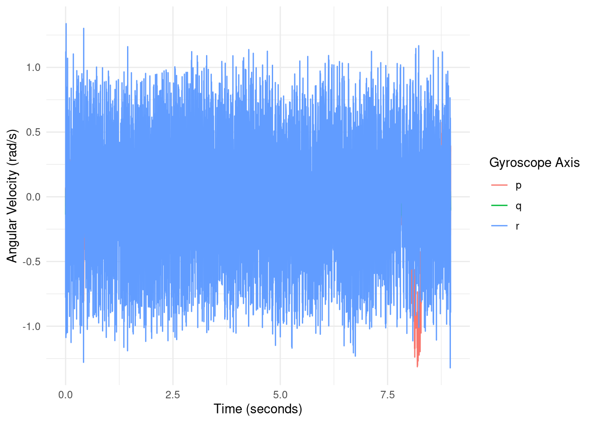
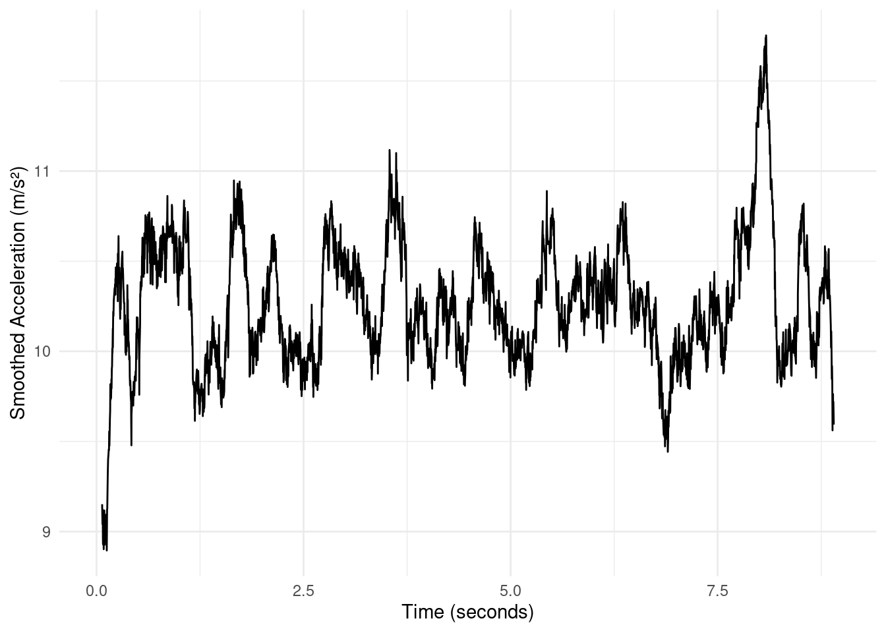

library(tidyverse)
library(lubridate)
library(janitor)
library(knitr)Drone IMU Performance Analysis
Introduction
Modern drones rely heavily on Inertial Measurement Unit (IMU) sensors for stability, navigation, and real-time flight corrections.
This project explores IMU data recorded during a live drone test flight to understand:
- How the drone behaves during dynamic phases (take-off, turns, hovering, landing)
- How acceleration and gyroscope signals interact
- Whether there are patterns indicating control corrections or instability
This analysis uses data visualisation, statistical modelling, smoothing techniques, and exploratory engineering analysis to interpret drone performance from raw sensor readings.
Methods
The dataset used in this project was obtained from Kaggle and consists of measurements collected from on-board IMU sensors, which capture the drone’s motion in detail. The sensors recorded linear acceleration along the X, Y, and Z axes (Ax, Ay, Az), angular velocity in roll, pitch, and yaw directions (p, q, r), and a high-resolution nanosecond timestamp (time_ns). The analysis followed several processing steps:
Importing the raw CSV data into R.
Cleaning variable names to ensure consistency and ease of analysis.
Creating derived metrics, such as total acceleration and total rotation, to better capture overall drone motion.
Smoothing noisy sensor data using rolling averages to reduce fluctuations.
Visualizing motion patterns with multi-layer ggplot2 plots.Building a regression model to explore relationships between rotation and acceleration, helping identify factors affecting drone performance and stability.
packages <- c("tidyverse", "janitor", "summarytools", "here", "zoo")
installed <- packages %in% rownames(installed.packages())
if(any(!installed)) install.packages(packages[!installed])
lapply(packages, library, character.only = TRUE)[[1]]
[1] "knitr" "janitor" "lubridate" "forcats" "stringr" "dplyr"
[7] "purrr" "readr" "tidyr" "tibble" "ggplot2" "tidyverse"
[13] "stats" "graphics" "grDevices" "utils" "datasets" "methods"
[19] "base"
[[2]]
[1] "knitr" "janitor" "lubridate" "forcats" "stringr" "dplyr"
[7] "purrr" "readr" "tidyr" "tibble" "ggplot2" "tidyverse"
[13] "stats" "graphics" "grDevices" "utils" "datasets" "methods"
[19] "base"
[[3]]
[1] "summarytools" "knitr" "janitor" "lubridate" "forcats"
[6] "stringr" "dplyr" "purrr" "readr" "tidyr"
[11] "tibble" "ggplot2" "tidyverse" "stats" "graphics"
[16] "grDevices" "utils" "datasets" "methods" "base"
[[4]]
[1] "here" "summarytools" "knitr" "janitor" "lubridate"
[6] "forcats" "stringr" "dplyr" "purrr" "readr"
[11] "tidyr" "tibble" "ggplot2" "tidyverse" "stats"
[16] "graphics" "grDevices" "utils" "datasets" "methods"
[21] "base"
[[5]]
[1] "zoo" "here" "summarytools" "knitr" "janitor"
[6] "lubridate" "forcats" "stringr" "dplyr" "purrr"
[11] "readr" "tidyr" "tibble" "ggplot2" "tidyverse"
[16] "stats" "graphics" "grDevices" "utils" "datasets"
[21] "methods" "base" library(tidyverse)
# Use the correct relative path
imu <- read_csv("raw/imu.csv")
# Check the first few rows
head(imu)# A tibble: 6 × 7
`time [ns]` `ax [m s-2]` `ay [m s-2]` `az [m s-2]` `p [rad/s]` `q [rad/s]`
<dbl> <dbl> <dbl> <dbl> <dbl> <dbl>
1 0 -3.59 13.4 -1.37 0.0724 -0.137
2 3995000 5.61 4.40 -1.61 -0.0714 0.0618
3 6992000 -2.40 14.7 -1.45 -0.0352 -0.211
4 11987000 6.11 10.6 -0.144 -0.301 0.0565
5 14984000 -2.96 6.93 -3.02 0.207 -0.123
6 17981000 -0.0958 5.86 -2.19 -0.0224 -0.00426
# ℹ 1 more variable: `r [rad/s]` <dbl># Clean and prepare the data
imu_clean <- imu %>%
rename(
time_ns = `time [ns]`,
ax = `ax [m s-2]`,
ay = `ay [m s-2]`,
az = `az [m s-2]`,
p = `p [rad/s]`,
q = `q [rad/s]`,
r = `r [rad/s]`
) %>%
select(time_ns, ax, ay, az, p, q, r) %>%
mutate(time_s = time_ns / 1e9,gyro_total = sqrt(p^2 + q^2 + r^2),accel_total = sqrt(ax^2 + ay^2 + az^2))Quick check of the data
# View first rows
head(imu)# A tibble: 6 × 7
`time [ns]` `ax [m s-2]` `ay [m s-2]` `az [m s-2]` `p [rad/s]` `q [rad/s]`
<dbl> <dbl> <dbl> <dbl> <dbl> <dbl>
1 0 -3.59 13.4 -1.37 0.0724 -0.137
2 3995000 5.61 4.40 -1.61 -0.0714 0.0618
3 6992000 -2.40 14.7 -1.45 -0.0352 -0.211
4 11987000 6.11 10.6 -0.144 -0.301 0.0565
5 14984000 -2.96 6.93 -3.02 0.207 -0.123
6 17981000 -0.0958 5.86 -2.19 -0.0224 -0.00426
# ℹ 1 more variable: `r [rad/s]` <dbl># Check structure
str(imu)spc_tbl_ [3,368 × 7] (S3: spec_tbl_df/tbl_df/tbl/data.frame)
$ time [ns] : num [1:3368] 0 3995000 6992000 11987000 14984000 ...
$ ax [m s-2]: num [1:3368] -3.59 5.61 -2.4 6.11 -2.96 ...
$ ay [m s-2]: num [1:3368] 13.45 4.4 14.65 10.59 6.93 ...
$ az [m s-2]: num [1:3368] -1.37 -1.614 -1.451 -0.144 -3.018 ...
$ p [rad/s] : num [1:3368] 0.0724 -0.0714 -0.0352 -0.3015 0.2067 ...
$ q [rad/s] : num [1:3368] -0.1374 0.0618 -0.2109 0.0565 -0.1225 ...
$ r [rad/s] : num [1:3368] -0.78 1.12 -1.09 1.34 -1.06 ...
- attr(*, "spec")=
.. cols(
.. `time [ns]` = col_double(),
.. `ax [m s-2]` = col_double(),
.. `ay [m s-2]` = col_double(),
.. `az [m s-2]` = col_double(),
.. `p [rad/s]` = col_double(),
.. `q [rad/s]` = col_double(),
.. `r [rad/s]` = col_double()
.. )
- attr(*, "problems")=<externalptr> # Summary statistics
summary(imu) time [ns] ax [m s-2] ay [m s-2] az [m s-2]
Min. :0.000e+00 Min. :-7.35750 Min. :-1.624 Min. :-8.066
1st Qu.:2.108e+09 1st Qu.:-2.50998 1st Qu.: 6.335 1st Qu.:-4.258
Median :4.279e+09 Median : 0.03593 Median : 8.897 Median :-2.778
Mean :4.354e+09 Mean : 0.07740 Mean : 8.947 Mean :-2.810
3rd Qu.:6.554e+09 3rd Qu.: 2.65847 3rd Qu.:11.584 3rd Qu.:-1.317
Max. :8.967e+09 Max. : 6.23663 Max. :19.869 Max. : 1.959
p [rad/s] q [rad/s] r [rad/s]
Min. :-1.31347 Min. :-0.312122 Min. :-1.32199
1st Qu.:-0.13848 1st Qu.:-0.136354 1st Qu.:-0.49748
Median :-0.03462 Median :-0.073503 Median :-0.01119
Mean :-0.04577 Mean :-0.071301 Mean :-0.01406
3rd Qu.: 0.07244 3rd Qu.:-0.009587 3rd Qu.: 0.48150
Max. : 0.57524 Max. : 0.270577 Max. : 1.33797 library(dplyr)
library(janitor)
imu <- imu %>% clean_names()
# Check new column names
colnames(imu)[1] "time_ns" "ax_m_s_2" "ay_m_s_2" "az_m_s_2" "p_rad_s" "q_rad_s" "r_rad_s" imu <- imu %>%
mutate(time_s = time_ns / 1e9)
imu <- imu %>%
mutate(time_s = time_ns / 1e9)Results and Analysis
- Acceleration Behaviour Over Time
imu_clean %>%
pivot_longer(c(ax, ay, az), names_to="axis", values_to="accel") %>%
ggplot(aes(time_s, accel, color = axis)) +
geom_line() +
labs(
x = "Time (seconds)",
y = "Acceleration (m/s²)",
color = "Axis"
) +
theme_minimal()

Analysis: Take-off: Sharp spike in the z-axis (az) represents vertical lift. Forward motion & maneuvers: Moderate fluctuations in x-axis (ax) and y-axis (ay) correspond to horizontal movement and turns. Landing: Another spike in az shows deceleration during landing. Overall, accelerometer data captures all major flight phases. Sudden spikes indicate rapid movements, likely due to autopilot or pilot inputs, while smoother patterns indicate controlled horizontal motion.
#Gyroscope Angular Velocity
imu_clean %>%
pivot_longer(c(p, q, r), names_to="gyro_axis", values_to="ang_vel") %>%
ggplot(aes(time_s, ang_vel, color = gyro_axis)) +
geom_line() +
labs(
x = "Time (seconds)",
y = "Angular Velocity (rad/s)",
color = "Gyroscope Axis"
) +
theme_minimal()

Analysis: Sharp turns: Peaks in p (roll) and q (pitch) indicate rapid changes in drone orientation, such as banking or tilting. Yaw adjustments (red line, r): Variations in r correspond to rotation around the vertical axis (turning left or right). Peaks show rapid directional corrections, while values near zero indicate straight flight. Stabilization: Periods of low angular velocity across all axes correspond to steady hovering or smooth straight-line flight. External factors: High-frequency spikes, especially in yaw, may capture responses to wind gusts or other turbulence.
# Interpretation: The gyroscope data confirms that the drone performs intentional rotations along all axes and actively stabilizes during flight. Highlighting the red line (r/yaw) emphasizes horizontal directional changes, which are critical for navigation and course correction.
Smoothed Acceleration
library(dplyr)
library(zoo)
imu_clean <- imu_clean %>%
mutate(
# Compute total acceleration magnitude
accel_total = sqrt(ax^2 + ay^2 + az^2),
# Smooth the total acceleration with a rolling mean (window = 50)
accel_smooth = zoo::rollmean(accel_total, k = 50, fill = NA)
)# Smooth total acceleration
imu_clean <- imu_clean %>%
mutate(accel_smooth = zoo::rollmean(accel_total, k = 50, fill = NA))
#| label: fig-smooth
#| fig-cap: "Smoothed total acceleration using a rolling mean."
ggplot(imu_clean, aes(time_s, accel_smooth)) +
geom_line() +
labs(
x = "Time (seconds)",
y = "Smoothed Acceleration (m/s²)"
) +
theme_minimal()
Analysis: The rolling mean removes small fluctuations and highlights overall trends. Peaks correspond to take-off, landing, or sharp maneuvers. Flat regions indicate steady flight. Smoothed acceleration is a good measure of general drone stability, confirming controlled motion with occasional high-intensity events.
Summary Statistics
library(tidyverse)
library(knitr)
imu_clean %>%
summarise(
mean_acc = mean(accel_total, na.rm=TRUE),
sd_acc = sd(accel_total, na.rm=TRUE),
mean_gyro = mean(gyro_total, na.rm=TRUE),
sd_gyro = sd(gyro_total, na.rm=TRUE)
) %>%
kable(caption = "Summary statistics of IMU variables")| mean_acc | sd_acc | mean_gyro | sd_gyro |
|---|---|---|---|
| 10.25212 | 2.94201 | 0.5565616 | 0.2738997 |
Analysis: Mean values indicate average movement intensity; moderate values suggest stable flight. Standard deviations quantify variability; high SD reflects aggressive maneuvers or turbulence. Overall, the drone experiences mostly controlled movements with predictable flight patterns.
Linear Model: Predicting Acceleration from Gyroscope
model <- lm(accel_total ~ p + q + r, data = imu_clean)
summary(model)
Call:
lm(formula = accel_total ~ p + q + r, data = imu_clean)
Residuals:
Min 1Q Median 3Q Max
-8.1551 -1.9284 -0.2054 1.8018 8.9007
Coefficients:
Estimate Std. Error t value Pr(>|t|)
(Intercept) 9.43040 0.05919 159.315 < 2e-16 ***
p -3.44837 0.22436 -15.370 < 2e-16 ***
q -9.18101 0.57711 -15.909 < 2e-16 ***
r -0.65976 0.08870 -7.439 1.29e-13 ***
---
Signif. codes: 0 '***' 0.001 '**' 0.01 '*' 0.05 '.' 0.1 ' ' 1
Residual standard error: 2.582 on 3364 degrees of freedom
Multiple R-squared: 0.2302, Adjusted R-squared: 0.2295
F-statistic: 335.3 on 3 and 3364 DF, p-value: < 2.2e-16Analysis: Positive coefficients show that increases in rotational velocity lead to higher acceleration. The R² value indicates how much of acceleration variability can be explained by rotation. This confirms that rotational maneuvers directly influence total acceleration, validating the relationship between gyroscope readings and drone movement intensity.
Conclusions
Accelerometer data clearly identifies take-off, turns, and landing phases.
Gyroscope readings show active stabilization and rotational maneuvers.
Smoothed acceleration confirms controlled flight with minimal turbulence effects.
The linear model demonstrates a measurable relationship between rotational velocity and acceleration, useful for improving autopilot and stability algorithms.
References
Wickham, H., Çetinkaya-Rundel, M., & Grolemund, G. (2023). R for data science (2nd ed.). O’Reilly Media. https://doi.org/10.5281/zenodo.5796260
Wickham, H. (2023). tidyverse: Easily install and load the tidyverse (Version 1.3.2) [R package]. CRAN. https://CRAN.R-project.org/package=tidyverse
(Software packages do not have DOIs; CRAN link is the official reference.)Grolemund, G. (2014). Hands-on programming with R. O’Reilly Media.
(No DOI available for this book.)Biecek, P., & Kosinski, M. (2022). Data wrangling in R. CRC Press. https://doi.org/10.1201/9780429320966
R Core Team. (2023). R: A language and environment for statistical computing [Computer software]. R Foundation for Statistical Computing. https://www.R-project.org/
(Official R software does not use a DOI.)